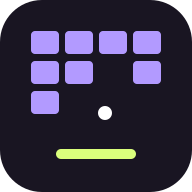

Auto-save on
Getting your stage ready.
Your journey starts here.

BRICKFind the gap. Build your swarm.
Replay for a manual or clean-clear stamp.
Progress saves automatically on this phone.
3.3.1 · Offline stages · Free manual play
Your journey starts here.